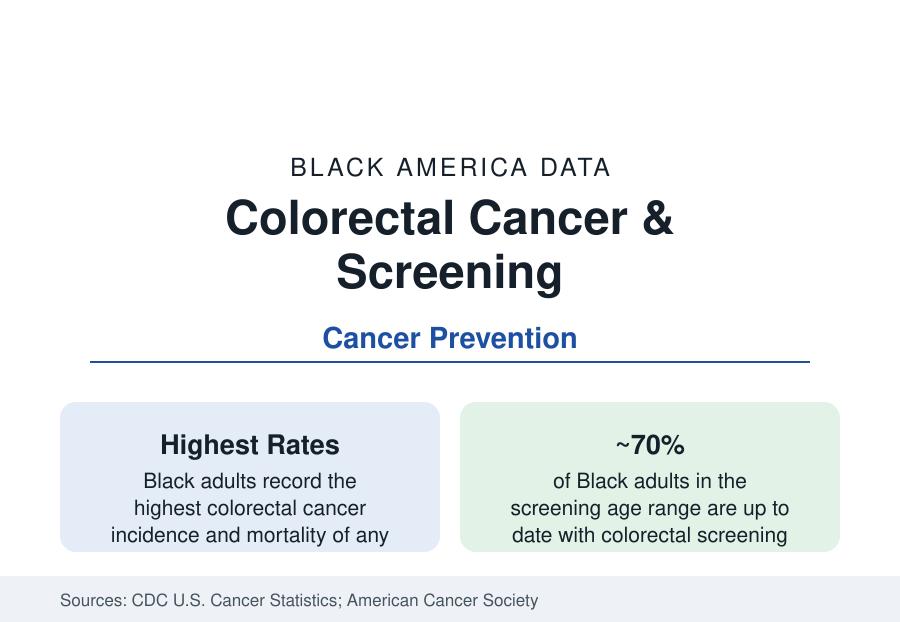

Black Public Health
Colorectal Cancer and Screening in Black Adults: The Preventable Gap
Black adults record the nation's highest colorectal cancer incidence and mortality — and screening rates that have nearly closed the gap. The CDC and cancer-registry data.

Black adults record the highest colorectal cancer incidence and mortality of any major racial group in the United States — incidence roughly 15 percent above the national figure and mortality roughly 35 to 40 percent higher in the American Cancer Society's compilations — for a cancer that is among the most preventable in the entire oncology data, detectable and interruptible by screening years before symptoms. This article reports the registry and screening data on the section's clearest prevention gap.
Incidence, Mortality, and the Stage Distribution
The registry data (the CDC's U.S. Cancer Statistics, combining the national registries) locate the disparity's mechanics. Black patients are diagnosed at later stages on average — localized disease in a smaller share of cases, distant-stage in a larger share — and the survival gap follows the stage gap with an additional within-stage remainder that the treatment literature attributes to treatment receipt and comorbidity. Black patients also develop the disease younger on average — the median age at diagnosis runs several years below the national figure, and the early-onset rise (diagnoses under 50, increasing across all groups in the recent registry data) registers strongly — which is why the screening guidelines' 2021 revision lowered the starting age to 45 for all adults, a change whose rationale the ACS and the task force stated partly in these terms. Tumor-location distributions differ as well (a higher share of right-sided cancers), a variable in screening-method performance that the methods literature tracks.
Screening: The Rates That Nearly Closed
The screening series is the good-news file of this section. Colorectal screening among Black adults in the eligible ages has climbed from roughly half in the early 2000s to around 70 percent in the recent Behavioral Risk Factor data — within a few points of the national rate and of White rates, one of the narrowest screening gaps in the entire prevention data, achieved through colonoscopy capacity growth, stool-based test options (FIT and multitarget stool DNA), and safety-net screening programs. The remaining gap concentrates where this section's gaps usually concentrate: the uninsured (the coverage article), the Medicaid and rural South populations, and the follow-up colonoscopy after a positive stool test — the step whose completion rates in the safety-net data run well below the initial test's, and without which the stool-test strategy does not deliver its mortality benefit.
The Mortality Arithmetic
The modeling literature quantifies what closing the remaining gaps is worth. The American Cancer Society's and the modeling consortia's analyses attribute a large share of the Black-white mortality difference to the stage distribution — itself substantially a screening-history product — meaning equal screening and treatment in the models removes the majority of the mortality gap for this cancer, a larger preventable share than for almost any other major cancer. Historical credit runs the other way as well: a meaningful share of the mortality improvement Black patients have already recorded — rates down substantially from their peaks — is attributable in the models to the screening climb of the past two decades. The disease is the section's demonstration case that the machinery works when it reaches people.
Risk Factors and the Adenoma Story
Beneath screening sits the risk data: the polyp-to-cancer sequence that screening interrupts is seeded by the risk-factor distribution this section tracks elsewhere — obesity and diabetes prevalence, dietary patterns, alcohol, smoking — on which Black adults carry higher average exposure, producing higher adenoma prevalence in the colonoscopy series. The hereditary share (Lynch syndrome and familial patterns) distributes evenly and is not the disparity's driver in the analyses. The clinical literature's current questions — the younger-onset rise's causes, the right-sided lesion detection problem, blood-based screening tests entering the market — apply to all groups, with the registry data watching whether their benefits distribute more evenly than the last generation's did.
Reading the Colorectal Data
Colorectal cancer is the prevention system's report card in one disease: the highest burden in the population with, now, nearly equal screening — and a mortality gap that persists as the accumulated deposit of the decades before the rates converged, plus the follow-up and treatment gaps that remain. The trajectory in the registries will show, within this decade, how much of the gap was history and how much is structure.
More in Black Public Health
Hypertension Among Black Adults: Prevalence, Control, and Consequences
About 55 percent of Black adults have hypertension — the highest rate of any U.S. group. Prevalence, onset, control, and the stroke, heart, and kidney consequences in the data.
Diabetes Among Black Adults: Prevalence and Complications
Nearly one in five Black adults has diabetes, diagnosed or undiagnosed — and its complications fall with particular weight. The CDC data on prevalence, control, and outcomes.
Black Life Expectancy: The Gap at Birth and Its Causes
Black life expectancy at birth is about 73 years, roughly five years below the national figure — the summary measure of every health gap in this section. The CDC data.
Source: Centers for Disease Control and Prevention, U.S. Cancer Statistics; American Cancer Society, Cancer Facts & Figures for African Americans; National Colorectal Cancer Roundtable screening data.